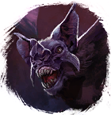

Открыть в интерактивной вики →
| Уровень | 25 |
|---|---|
| Сила (PvE) | 328 |
| Аспект арены | Solnai |
| Здоровье | 800 |
| Мана | 700 |
| Выносливость | 700 |
Локация
- Пещеры под Топями
- Пещеры под Башнями
- Забытый коридор
- Кладбище Ящериц
- Ящериное кладбище
- в одной группе с: Ацеродон
В отряде: Ацеродон (Пещеры под Топями, Пещеры под Башнями, Забытый коридор)